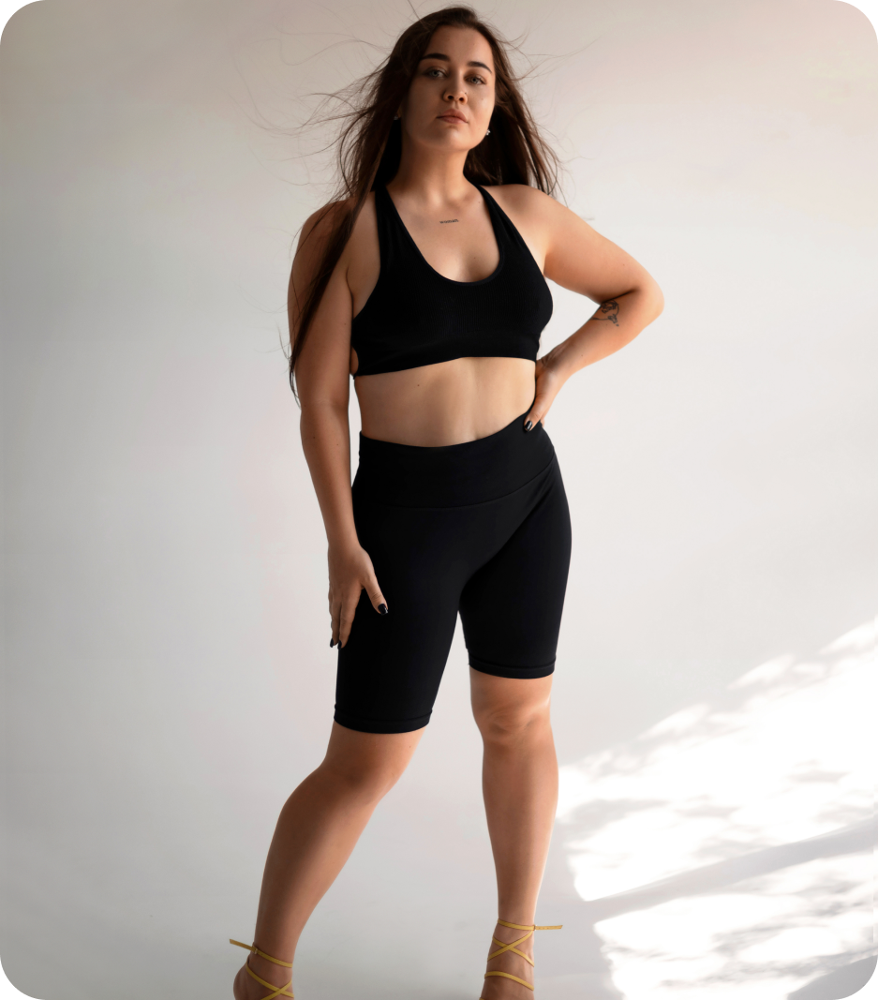

@include('assets/layout/head.html')
X
Стандарт
Модуль 0
Моя історія. Як я боялась зважуватися, потерпала від булінгу в школі і мріяла захворіти на анорексію.
Модуль 1
Фізіологічні причини надлишкової ваги
Урок 1 -
Коментар лікаря ендокринолога, дієтолога
Урок 2 -
Робота органів, дієти (також і з медичної точки зору)
Модуль 2
Психологічні причини надлишкової ваги
Урок 1 -
Коментар від психотерапевта
Урок 2 -
Інформація про психологічні розлади, рекомендації по зверненню до спеціаліста по необхідності.
Модуль 3
Психосоматичні причини
Урок 1 -
Коментар від психотерапевта
Урок 2 -
Інформація про психологічні розлади, рекомендації по зверненню до спеціаліста по необхідності.
Модуль 4
Самооцінка та самоцінність
Урок 1 -
Людина - це особистість і вона має значення через безліч факторів, а не лише через вагу та певний вигляд тіла
Урок 2 -
Фіксація на вазі. Навіть попри фіксацію ваги, ми можемо втратити позитивні емоції від життя
Модуль 5
Вплив соціуму та стандартів краси на самосприйняття
Урок 1 -
Що таке стандарти краси і чому вони так сильно глибоко в нас сидять ?
Урок 2 -
Фрази, які нам всім казали з самого дитинства та про те, як вони травмували нас
Модуль 6
Що таке харчова поведінка, як вона закладається, як її змінювати?
Урок 1 -
Дієтичне і здорове мислення, поділ на погану і хорошу їжу.
Урок 2 -
Коментар нутриціолога
Урок 3 -
Базові властивості їжі - жири/білки/вуглеводи
Модуль 7
Емоційний та фізичний голод
Урок 1 -
Як відрізняти емоційний і фізичний голод ?
Урок 2 -
Що я відчуваю ? Таблиця емоцій
Урок 3 -
Що мені необхідно? Таблиця потреб, адже далеко не завжди є потреба в їжі
Модуль 8
Інтуїтивне харчування та міфи про нього. Як до нього прийти ?
Урок 1 -
Таблиця відчуття голоду
Урок 2 -
Абсолютно все про звички, про сон, про рух, про правильний графік дня
Модуль 9
Спорт - як спосіб тортур, або "все для того аби схуднути, навіть зламані коліна"
Урок 1 -
Інший погляд на спорт та активність, через призму любові та турботи про себе, а не через призму "покарання за ось той шматочок тортика"
Урок 2 -
Відпрацювання калорій та все, що з цим пов'язано
Модуль 10
Медитації
Медитація 1 -
Медитація на усвідомлення самоцінності
Медитація 2 -
Медитація вдячності своєму тілу
Медитація 3 -
Медитація повернення до себе, розмова з внутрішньою дитиною
Медитація 4 -
Медитація щодо вторинних вигод
Окрім основного матеріалу:
- Домашні завдання
- Практики
- Загальна тех. підтримка курсу
- Загальний чат
Прийняти участь
X

Стандарт +
доступ до всього матеріалу тарифу "Стандарт"
загальна тех. підтримка курсу
загальний чат
доступ до медитацій
живий великий онлайн розбір від Ренати
запис додаткових двох розборів від Ренати
додаткові матеріали курсу (таблиці, чек листи, тощо
інтенсив
домашні завдання
перевірка домашніх завдань кураторами
Прийняти участь
X
ВІП
доступ до всіх уроків
загальна тех. підтримка курсу
загальний чат
доступ до медитацій
живий великий онлайн розбір від Ренати
додаткові матеріали курсу (таблиці, чек листи, тощо)
інтенсив: "Як бути харизматичною за будь-якої ваги"
чати "десятки", в яких буде присутня Рената
додаткові два живих великих розборів від Ренати
додаткова підтримка всередині курсу із допомогою проходження курсу
емоційна підтримка при проходженні курсу
продовжений доступ до курсу на 1 місяць
домашні завдання
перевірка домашніх завдань
Прийняти участь
X
Персональний
ексклюзивне персональне ведення від Ренати Туль !
доступ до всіх привілегій інших пакетів
Прийняти участь
@include('assets/layout/header.html')
@include('assets/layout/hero.html') @include('assets/layout/about.html') @include('assets/layout/target.html') @include('assets/layout/program.html') @include('assets/layout/review.html') @include('assets/layout/contact.html')
@include('assets/layout/footer.html')